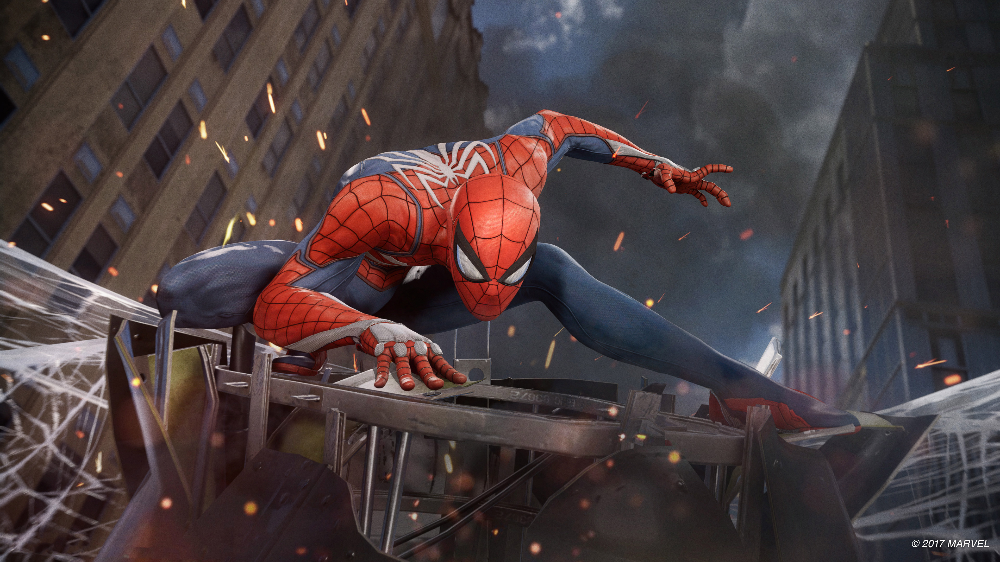

The Actors That Played Spider-Man
Tobey Maguire
Tobias Vincent Maguire (born June 27, 1975) is an American actor and film producer. He is known for playing the title character from Sam Raimi's Spider-Man trilogy (2002–2007), and reprised the role in Spider-Man: No Way Home (2021).
He started his career in supporting roles in the films This Boy's Life (1993), The Ice Storm, Deconstructing Harry (both 1997), and Fear and Loathing in Las Vegas (1998). His leading roles include Pleasantville (1998), Ride with the Devil (1999), The Cider House Rules (1999), Wonder Boys (2000), Seabiscuit (2003), The Good German (2006), Brothers (2009), The Great Gatsby (2013), and Pawn Sacrifice (2014).
He received a Golden Globe Award nomination for Best Actor in a Motion Picture Drama for Brothers (2009). Maguire established his own production company in 2012 called Material Pictures, and co-produced Good People (2012), and Pawn Sacrifice (2014).

Andrew Garfield
Andrew Russell Garfield (born 20 August 1983) is an English and American actor.[2][3][4] He has received various accolades, including a Tony Award, a BAFTA TV Award and a Golden Globe Award, in addition to nominations for two Academy Awards. Time included Garfield on its list of 100 most influential people in the world in 2022.
Born in Los Angeles and raised in Epsom, England, Garfield trained at the Royal Central School of Speech and Drama and began his career on the UK stage and in television productions. He made his feature film debut in the 2007 ensemble drama Lions for Lambs. He won the BAFTA TV Award for Best Actor for his performance in the television film Boy A (2007). He came to international attention in 2010 with the supporting role of Eduardo Saverin in the drama The Social Network, for which he received nominations for a BAFTA Film Award and a Golden Globe Award.
Garfield gained wider recognition for playing Spider-Man in the superhero films The Amazing Spider-Man (2012), The Amazing Spider-Man 2 (2014), and later in Spider-Man: No Way Home (2021). He received nominations for the Academy Award for Best Actor for starring as Desmond Doss in the war film Hacksaw Ridge (2016) and as Jonathan Larson in the musical Tick, Tick... Boom! (2021). Garfield also won a Golden Globe Award for Best Actor for the latter. In 2022, he starred as a Mormon detective in the crime drama miniseries Under the Banner of Heaven, earning nominations for a Primetime Emmy Award and a Golden Globe Award.
On stage, Garfield appeared in the 2012 Broadway revival of Death of a Salesman, which garnered him a Tony Award nomination. For playing Prior Walter in a 2017 London production of Angels in America, Garfield was nominated for a Laurence Olivier Award; he reprised the role on Broadway the following year and won the Tony Award for Best Actor in a Play.
Tom Holland
Thomas Stanley Holland (born 1 June 1996) is an English actor. His accolades include a British Academy Film Award, three Saturn Awards, a Guinness World Record and an appearance on the Forbes 30 Under 30 Europe list. Some publications have called him one of the most popular actors of his generation.
Holland's career began at age nine when he enrolled in a dancing class, where a choreographer noticed him and arranged for him to audition for a role in Billy Elliot the Musical at London's Victoria Palace Theatre. After two years of training, he secured a supporting part in 2008 and was upgraded to the title role that year, which he played until 2010. Holland made his film debut in the disaster drama The Impossible (2012) as a teenage tourist trapped in a tsunami, for which he received a London Film Critics Circle Award for Young British Performer of the Year. After this, Holland decided to pursue acting as a full-time career, appearing in How I Live Now (2013) and playing historical figures in the film In the Heart of the Sea (2015) and the miniseries Wolf Hall (2015).
Holland achieved international recognition playing Spider-Man/Peter Parker in six Marvel Cinematic Universe (MCU) superhero films, beginning with Captain America: Civil War (2016). The following year, Holland received the BAFTA Rising Star Award and later became the youngest actor to play a title role in an MCU film in Spider-Man: Homecoming. The sequels Far From Home (2019) and No Way Home (2021) each grossed more than $1 billion worldwide, and the latter became the highest-grossing film of the year. During this period, Holland gained recognition for playing darker roles in the crime dramas The Devil All the Time (2020) and Cherry (2021). Holland has additionally directed the short film Tweet (2015) and voiced roles in computer-animated features, including Onward (2020).

